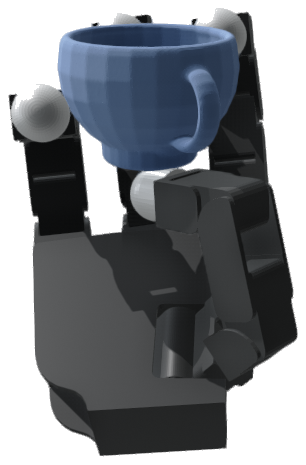
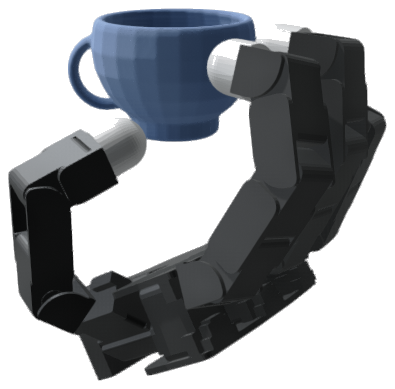
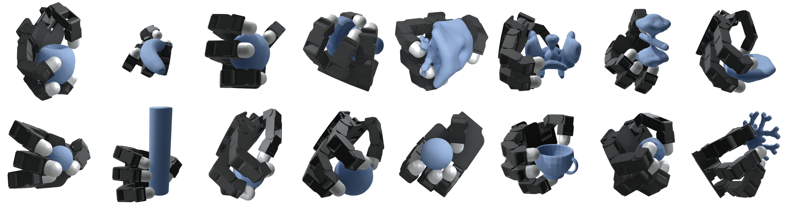
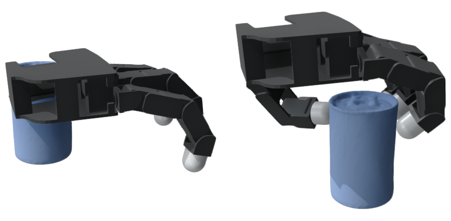
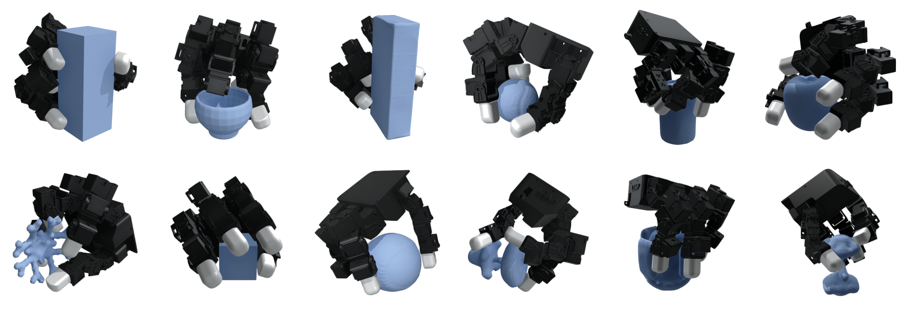

Most learned dexterous grasp generators relegate contact forces to a downstream verification step, so a kinematically-plausible pose can still violate the conditions for a stable physical grasp. We address this with EquiDexFlow, an SE(3)-equivariant flow-matching model that jointly predicts wrist pose, joint angles, fingertip contacts, surface normals, and contact forces from an object point cloud. Our architecture projects contacts onto the object surface and forces into the Coulomb friction cone by construction, so placement and friction compliance hold without loss penalties.
We prove end-to-end SE(3) equivariance and verify it empirically over 200 rotations, with wrist residuals below 0.04° and exactly zero joint deviation. Trained on 8,100 force-closure grasps across 81 objects for the 16-DoF Allegro Hand,EquiDexFlow achieves zero friction violations, the best composite score, and the lowest wrench residual among all ablation variants. We retarget decoded fingertip contacts to a 16-DoF LEAP Hand via per-finger inverse kinematics, and our hardware-feasible refinement places every joint at least 5% inside its actuator envelope while preserving wrench balance. On the physical robot, retargeted grasps complete open-loop pick-and-hold trials on all six test objects, with every asymmetric object succeeding at both the canonical pose and a 120° co-rotation.
EquiDexFlow takes an object point cloud and a kinematic model of a $D$-DoF, $M$-fingered robotic hand and produces, in a single forward pass: a wrist SE(3) pose, $D$ joint angles from a conditional normalizing flow, a set of $M$ contact points projected onto the object surface, and per-contact forces projected into the friction cone, all jointly consistent with the learned distribution. The released Allegro checkpoints use $D{=}16$ and $M{=}4$. Both are set per-hand in the model config.
SO(3)-equivariant point-cloud encoder producing features $z_O \in \mathbb{R}^{341 \times 3}$.
Wrist pose via flow matching on the Lie group, integrated with Munthe-Kaas RK4.
Per-finger contacts projected onto the object surface by construction.
Contact forces projected into the Coulomb friction cone architecturally.
Conditional Real-NVP normalizing flow for multimodal finger configurations.
EquiDexFlow jointly predicts hand configuration, fingertip contacts, and contact forces from a point cloud in one forward pass, without post-hoc force recovery. Cone projection enforces Coulomb friction and differentiable surface projection keeps contacts on the object. Both hold by construction for every sample.
The full pipeline (encoder, SE(3) flow, contact/normal/force decoders, and wrist refinement) is SE(3)-equivariant by construction. Rotating the input object rotates the generated grasp identically, with wrist rotation residual below 0.04° and zero joint deviation across 200 SO(3) rotations.
EquiDexFlow's contact-grounded representation is embodiment-agnostic: the encoder, flow backbone, and decoder heads do not depend on the hand model. To demonstrate this fact, we retarget Allegro grasps to a physical LEAP Hand via inverse kinematics and confirm that the grasps are transfer to hardware.
Grasps co-rotate with the object under arbitrary rotations. Wrist residual <0.04°, joint deviation exactly zero.



Extended gallery: six objects across three input rotations (0°, 120°, 240° about the vertical axis). The wrist pose and finger configuration co-rotate with the object.

Objects, left to right then top to bottom in triples: YCB pudding box, EGAD! G6, box primitive, YCB mustard bottle, EGAD! E4, and EGAD! G5. Within each object, the three frames are 0°, 120°, and 240°.
Allegro Hand grasps produced by EquiDexFlow across EGAD!, YCB, and primitive objects. Each grasp is decoded from a point cloud and seated on the surface by wrist refinement.


Pre-contact IK (left) and contact IK (right) on the YCB tomato soup can
The flow-decoded wrist typically places fingertips a few centimeters off the object surface. Test-time optimization jointly refines the full 6-DoF wrist pose and the 16-DoF joint vector so the kinematic fingertips reach the predicted contacts, with trust-region regularization and mesh penetration penalties. The refinement is frame-invariant and commutes with any SE(3) action, preserving the equivariance guarantee.
Grasp quality on 811 test grasps, 10 samples each. All variants achieve 0% friction violations (architectural guarantee).
| Method | Contact Err (m) ↓ | Force Err (N) ↓ | Fric. Viol. (%) ↓ | Top-1 Score ↑ | Top-3 Score ↑ | Wrench Res (Nm) ↓ |
|---|---|---|---|---|---|---|
| PoseOnly | 0.040 | 1.57 | 0.0 | −2.52 | −3.25 | 1.29 |
| ContactOnly | 0.041 | 1.84 | 0.0 | −2.57 | −3.46 | 1.36 |
| GeomOnly | 0.041 | 1.84 | 0.0 | −3.29 | −4.02 | 1.58 |
| EquiDexFlow (ours) | 0.042 | 1.99 | 0.0 | −0.96 | −1.18 | 0.46 |
| Angle Bin | $\Delta R_w$ (°) | $\Delta x_w$ (mm) | $\max \Delta q_h$ (°) |
|---|---|---|---|
| 30–60° | 0.037 | 0.002 | 0.00 |
| 60–90° | 0.037 | 0.002 | 0.00 |
| 90–120° | 0.036 | 0.001 | 0.00 |
| 120–150° | 0.036 | 0.002 | 0.00 |
| 150–180° | 0.036 | 0.002 | 0.00 |
| Configuration | Top-1 ↑ | Top-3 ↑ | FVR (%) ↓ |
|---|---|---|---|
| Stochastic | −0.95 | −1.22 | 0.0 |
| Deterministic ($z{=}0$) | −0.97 | −1.24 | 0.0 |
| No cone projection | −5.92 | −5.95 | 100 |
Disabling cone projection degrades the composite score by over 6× and drives friction violations to 100%, confirming the 0% rate is a structural guarantee.
Allegro grasps retargeted to the LEAP Hand via inverse kinematics, validated in simulation, and executed on physical hardware.

Front view. Retargeted from Allegro to LEAP via contact-point IK. Mean fingertip residual 14 mm. Objects, left to right and top to bottom: box primitive, SNS cup, sugar box, tennis ball, tomato soup can, apple, EGAD G6, cube, softball, EGAD E4, EGAD A4, and EGAD F6.
Gravity-off robustness check (GenDexGrasp/GAGrasp protocol in Drake): a ±xyz inertial load is applied to the object along all six axes, and a grasp passes if the object drifts under 2 cm in every direction. Both objects pass at the canonical pose and its 120° co-rotation, and the held object stays nearly stationary throughout.
Mustard Bottle, 0° · 3.2 mm max drift
Mustard Bottle, 120° · 3.4 mm max drift
Potted Meat Can, 0° · 0.9 mm max drift
Potted Meat Can, 120° · 9.2 mm max drift
Equivariant grasps executed on a physical LEAP Hand mounted on a 6-DoF ZArm. All six hardware test objects complete open-loop pick-and-hold trials, with every asymmetric object succeeding at both 0° and 120°.
Click any clip to enlarge
Each pair is the same generated grasp co-transformed by equivariance from 0° to 120°, not re-planned.
| Object | IK Tip (mm) | 0° | 120° |
|---|---|---|---|
| Cube | 14.3 | Yes | Yes |
| Box | 14.4 | Yes | Yes |
| Meat | 14.5 | Yes | Yes |
| Mustard | 14.3 | Yes | Yes |
| Reachable | 4/4 | 4/4 |
@misc{equidexflow2026,
author = {Clinton Enwerem and John S. Baras and Calin Belta},
title = {{EquiDexFlow}: Contact-Grounded {SE}(3)-Equivariant Dexterous Grasp Generative Flows},
year = {2026},
archivePrefix = {arXiv},
primaryClass = {cs.RO},
}